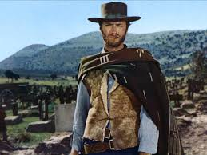

In this article I am going to review three different competitors websites of Fiocchi Custom Flies. The first company I am going to talk about is Tailwater Junkie . First impressions are good. I like the logo; it is very creative. I do not like however how large the photos are right below the logo. I think it would be better if one didn’t have to scroll down to see the full picture. Another thing I do not like is that you have to dismiss a banner to see the navigation bar. If one does not press “dismiss” you must scroll down to see what the site offers. On the other hand, this may be on purpose, so the person has to scroll down to look at the pictures of flies and see what Tailwater Junky has to offer. In looking at the navigation bar I like how it says “My Bag” instead of cart. This adds a little element to the overall feel. In scrolling down, it is set up very nice. I like how there are six different categories to pick from with some great pictures. I love how when you put your mouse over the pictures they zoom in automatically. This really draws the customer in. There are only two different colors used on the site, dark green and the white background. I think the dark green was a great choice because dark green goes with the outdoors and flyfishing. Which also goes with the audience. Moreover, it keeps it simple in an aesthetically pleasing way. I loke then you click on the flies for sale it brings you a different page where there are again different categories with pictures to choose from. I also like the text used and the banners with an arrow in it. Very pleasing to the eye. The code seems like it is clean and modern. Although there are black lines through some of the code, I am not really sure what that means. The code it in HTML5 and does validate. Another good thing about it is that it mobile friendly. Another thing that I do not really like is that with most of the pages the logo is at the top of the page surrounded by white space. It just does not look very pleasing to the eye. I like that in the shop one can sort by price and different things. I also think is great that there is a write up about all the flies that are offered in addition to the fly recipe. The recipe is a great touch. It is even more impressing that there is a fishing strategy write up as well. It is also pleasing to the eye that all of this is written in a grey instead of a black. Overall, this is a great site. The next site I will be looking at is Fly Geek . When you first click on the site the set-up is not like most sites. Very strange but pleasing at the same time. Right off the bat you see the flies he has for sale. The best way to describe it is that it is a collage of his products with the names of the flies. The interesting thing is that all the pictures are different sizes. It seems messy but again it is kind of appealing at the same time. Just like the last site this guy is also using green accents but not overly green. Most of the flies this guy has on his site are for saltwater fishing. Something that points to this would be good to have. The spacing between the pictures looks great. In addition, I like how when you hover over the pictures they change to different colors of that pattern. I also like how you can click through the flies individually with forward and back arrows after you select a fly to look at. It is also good that there is again a little write up about each fly. I would say that this site is a very clean and basic site which in this case I think is a good thing. Although, a little more umph would be nice as well. The code is in HTML5 and is modern and clean. Again, there are some black lines through some of the code I am not sure what that is about. What sets this site apart is the way he has his flies laid out; it is not like any site I have seen. I think it was a good idea to mix it up in this manner. A negative thing is that the navigation is not great. But in really looking at I do not think is needs to be great for this site because he does not have a lot of flies for sale. In addition, the way is set up the person looking at the site is more likely to look at all the flies. I would say this is a great-good site. Now to the final site. This site is pretty terrible, and the interesting thing is that when you look up custom flies for sale Ken's Custom Flies is the first thing on the list. When first looking at the site one would not know that he is in fact felling fishing flies. There are no fish and no flies when you first open up the page. There are different font colors through the site which is not visually pleasing. The main color he uses is this sky blue that I am not thrilled about. When you press shop in the navigation a ton of different flies come down which is a little daunting and semi confusing. When you clock on one you see the pictures of the flies for sale many of which have different backgrounds which I think looks bad. When clicking on a fly there is a one or two sentence write up, nothing like the other sites. There is also no logo which is also a bad thing. I really do not like the layout of this site. It seems to be that whenever there is extra space, he fills it with this sky blue color. Colors are not used well all in this site. I also do not like the huge black boarder on the top and bottom of the some of the pictures. Symmetry would do wonders to this site. There are no cool icons or nice text. It is all pretty blah. The layout is the first page is not good or pleasing to the eye. I would say that the code is HTML5 but does not look at nice as the other sites. Overall, I think this site is pretty terrible and would be surprised if people got flies from it.